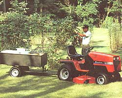
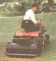
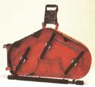
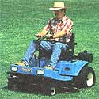
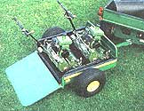
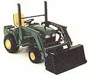
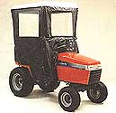
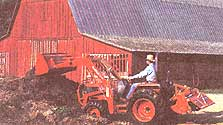
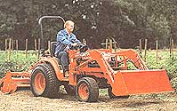

Choice and care of the farmsteader's single best tool.
Lawn and garden tractors? In Mother Earth News? Why, aren't they for paunchy suburbanites to impress the neighbors with by trimming chemical-dosed lawns that would be better-used to graze sheep, or grow food, or exotic herbs of one sort or another? To be sure, a great many use their small tractors in such a capacity, but, like you I bet, I live on a place with just too much land to mow and too little to hay. I need a good measure of open space with a firm surface to haul garden supplies, logs for the wood stove, and grain for my daughter's horse ...say nothing of forage for the horse and small stock, who won't eat the poplar and juniper that is trying to invade the pasture. Which means that I need to maintain a few acres of sod ...turf...meadow...or "mowin," as they call open but untilled land here in New England.
For my money (what little I have), since the cost-effective, reliable, long-life small tractor was perfected and prices stabilized in the '80s, I've felt that a fully accessorized modern garden tractor has been the single best machine a country small-landholder can own. Powered by a hefty 10 to 20 horses and a multi-speed/high-torque automatic transmission, a tractor with attachments can do a better job at several times the speed, but at a fraction of the total cost of equivalent single-purpose machines. In effect, you are doing a dozen or more jobs with single engine and transmission and chassis rather than buying a dozen individually powered machines. A capable standalone rotary tiller, snowblower, mower, chipper-shredder, and lawn vac each costs $1,500 and more these days. A snow plow for your truck will cost $2,500 and even an old and very used full-scale tractor/bucket loader that much and more. But a tractor-mount, power takeoff-operated (PTO) tiller costs about $500, a snowblower attachment the same, while a set of cultivators or a snow blade costs only $250.
I know of no reasonably priced replacement for a small hydraulics-equipped tractor and its ability to power a log splitter, cordwood saw, and pull a trailer full of logs. The ease with which hydraulic power can be applied permits the tractor to power custom-rigged applications like a small hay baler, manure spreader, grain mill, conveyor, water pumps and much more.
Of course, if you only have to tend a small patch of level front yard, a lovely little muscle-powered, push-type reel mower will do fine. As long as the grass isn't too high, pushing a knife-sharp reel mower is a delight. But muscling a dull one is agony. I haven't seen a new engine-powered reelmower in years. Big gang reel-mowers are available but are expensive to buy and maintain, and are best suited to glass-fiat ball fields, city parks, and golf courses. Most homeowners resort to the crude and dangerous, but cheap and any-terraincapable rotary.
Trudging along in the dust, racket, and exhaust fumes of the mini-tornado created by a rotary mower in the bugs and sweaty heat of a summer's day is perfectly suitable to teach one's school-age offspring how repetitive can be the process of earning an honest buck, but becomes more than just tiresome if your land stretches out to more than a half-acre or so. Indeed, so hated is lawn-mowing that the single most detested, thus neglected and abused machine in the homeowners inventory is the poor rotary mower. According to industry insiders, it's when the eldest child leaves home that the typical homeowner exchanges the walk behind demon rotary for a "riding mower" or "lawn tractor." And when the townsman or suburbanite makes the big move to a larger country place with a big garden, pasture, and livestock, the "lawn" tractor is traded for a larger "garden" tractor, for an even more capable "compact" tractor or finally for a full-size modern or vintage "farm" or "industrial" tractor.
In the text of this article, we'll examine your practical options in riding tractors. We'll offer suggestions for how to decide what size machine to buy, whether and how to buy it new or used, where to find it ...then show how to perform routine maintenance and minor repairs of the machine you choose.
Evolution of the Small Tractor
By the 1940s, the farmer's mule had been largely replaced by tractors ranging from huge diesel crawlers capable of pulling multiple-bottom gang-plows through the vast wheat fields of Alberta and Kansas to nimble and narrow-tire little gas-powered "Cub"size machines designed for small-plot truck gardens in the Connecticut River or San Fernando valleys.
Following the end of World War II, a longtime country-to-city migration trend reversed, and those who were able abandoned decaying city centers-initially moving to near-town suburbs, and later to the outskirts of small towns and then out into the real country.
Lawns became too large to mow with a reel mower. Ignoring haughty disdain from the old-line reel-mower manufacturers, innovators developed the gas-engine-powered rotary mower by downsizing the concept behind the Brush Hog-a tractormounted rotary flail enclosed in a steel housing used by farmers and highway departments to clear grown-up fields and roadside scrub. Today, the old reel-mower makers are long defunct and such names as Simplicity, LawnBoy, Toro/WheelHorse and Snapper survive as full-line lawn and garden equipment makers.
Most large pre-1970s farm tractors are rusting in barns and on the back lots of farm implement dealers, while the small pre-'60s models-Farmall `A's and Cubs, Ford 8Ns and comparable small-size models from John Deere, J. I. Case, AllisChalmers and other old-lines-were given a new lease on life in 1947 when Woods Equipment Company of Oregon, Illinois, adapted the rotary flail into the multiple-blade under-mount mower. Made to fit more than 200 mounts, a Woods can mow a 6-foot wide swath of grass or light brush at a rate of up to three acres an hour, enabling practically any antique tractor to serve on into its seventh or eighth decade-as an estate mower.
Still smaller tractors in lawn and backyard-garden-scale became feasible when small but powerful (2.5 to 7hp), and low-priced one-cylinder, air-cooled engines were perfected by the Wisconsin-based engine makers Briggs & Stratton, TecumsehLauson and by plumbing-fixture maker Kohler among others. Small scale transmissions and differentials were developed by Peerless (sister company of Tecumseh), Eaton and others.
The riding-mower/lawn tractor evolved from two directions. Lawn mower-makers expanded their product lines upwards beginning with 5hp rear-engined riding mowers. A little behind-but not by much the established farm equipment manufacturers downsized their product lines as farms grew fewer and larger and the suburban consumer market expanded. Together the two industries evolved the modern 7 to 12hp lawn tractor and the larger 16 to 20+ horsepower garden tractor.
Multiple-cylinder air-cooled engines perfected by aircraft-engine maker Continental and generator maker Onan permitted even more-powerful garden tractors offering PTO or hydraulics-operated accessory equipment like front-end loaders, rear-mounted tillers, back-hoes and post-hole augers, log splitters and dozens more.
In recent decades, Japanese farm equipment manufacturers-preeminently, Kubota-have introduced small but powerful diesel-engine tractors. Sold under their own names and by John Deere and other domestic companies, these compact tractors offer big-tractor performance at a fraction of big-tractor price and in machines of a size to fit into a garage. They compensate for their comparative small size with the heavy diesel engine, wheel weights, and full-time 4wheel drive. The Japanese firms Honda and Kawasaki also make top-quality small engines and limited lines of lawn and garden equipment.
Survivors and Newcomers
I am happy to report that many small tractors still come in the distinctive colors that have set their farming forbears apart since the 1920s. John Deere produces the industry's most comprehensive line of consumer and professional-grade lawn and garden equipment-all painted lovely Deere Green with yellow lettering or (in commercial lines) vice versa. The fine old crimson International Harvester Farmall line evolved into the Cub Cadet, now unaccountably-painted cream. Farmall-red survives, however, in tractors made by Toro, Bolens, now a part of Troy-Bilt, maker of the famous red rear-tined tillers and others. JI Case Orange seems to have been appropriated by Kubota and others. Some Ford farm and industrial tractor dealers offer a line of Ford-Blue garden and lawn tractors made by old-time Harvester-maker New Holland(now owned by Fiat!?) though some models are made by-or for Jacobsen, which is part of Homelite, the chain saw maker, that is a division of Textron headquartered in Charlotte, NC. The Massey-Ferguson name survives on a half-dozen riding mowers, and Allis Chalmers has transmogrified into Agco-Allis Division of Simplicity MTD and others turn out machines under private brands with minor technical and cosmetic variations and in all colors of the rainbow for mall stores, Sears, Montgomery Ward and other major mass-merchandisers.
A specialized segment of the industry manufactures turf equipment for golf courses, sports fields and estates. Their heavy-duty equipment fits in price and capacity midway between garden and compact tractor lines, and will appeal to those with extensive lawns to manicure. Several firms make super riding mowers with 60inch mower decks in front, engines in the rear over a single rear steering wheel so they can turn in less than their total length. Steiner Turf Equipment of Dalton, Ohio, makes a crimson line of garden accessorized tractors with 4-wheel drive and an articulated chassis-with a hinge in the middle-to make super-tight turns.
Most generic lawn and garden machines have generic Briggs or Tecumseh engines and drive-train components from Peerless and they are repairable by any small engine shop. But some-in particular MTD, little-known in its own right, but maker of dozens of name-brand and private-label tractors-manufacture their own transmissions. All makers fabricate or subcontract their own chassis and sheet metal and make and/or assemble their own steering gear and controls.
No repair shop can carry all components for any single-engine maker in stock ...to say nothing of running gear, front-end parts for all models of all the thousands of tractor models made by a dozen manufacturers over the past four decades. A good mechanic can fix any engine, and locate most modern-era parts given enough time (Briggs has the intriguing habit of changing its entire parts cataloging system every few years, just to keep the rest of us from feeling like experts.). And, a talented small-engine mechanic can substitute some parts and fabricate others (for a price).
I've rambled on about the history and structure of the industry partly out of nostalgia, but mainly to show how many original equipment manufacturers (makers of the tractors themselves) and how many engine-makers there are. Due to frequent mergers, brand-name sales and chaotic outsourcing throughout the industry, you really never know which company actually made a given model of tractor in any given year, or which engine from what manufacturer goes with it. I can't begin to list the hundreds of job shops small and large that make controls, front-end parts, electrical components, sheet metal parts, wheels and tires and on and on. Plus, a large-volume customer can specify a limited number of special features on an engine, transmission or differential. As a result, the changeable Briggs parts catalog is the size of an unabridged dictionary and repair manuals for MTD products begin with the ominous advisory: "DUE TO THE LARGE NUMBER OF MTD MODELS AND THE WIDE VARIETY OF ENGINES INSTALLED, AN ACCURATE CROSSREFERENCE TABLE IS NOT AVAILABLE."
In other words, in this wonderfully wild, woolly, vigorously competitive segment of American industry, nobody has a real handle on who supplies what part to whom. To further confuse matters, not all tractor, engine and running-gear brands are distributed nationally, not all nationally distributed brands are sold and serviced in every section of the country and not all models are sold in every rural community.
Confused? Welcome to the small-engine business. Unless you are an experienced small-engine and lawn-equipment mechanic, you will have to rely on professional repair service. Even if you do most of your own work, you'll need a knowledgeable source for major jobs and for parts.
Thus, the single most important rule I can suggest in buying a tractor: GET A BRAND NAME THAT IS COMMON AND THAT IS REPRESENTED BY A SERVICING DEALER IN YOUR AREA especially if you live west of the Mississippi, far from the Wisconsin, Midwest and South Central State manufacturing centers. I can't stress enough the two words service and dealer, meaning a franchised new-equipment dealer with a fully equipped shop, a complete inventory of common parts, and a hot line to the central parts depot, plus a staff of skilled, factory-trained mechanics. I suggest driving around on Saturday and Sunday afternoons to see which tractor brands are most plentiful on local lawns and garden, then check the Yellow Pages and locate the most substantial looking local dealer. Much know-how, gained through hard experience, is not recorded in any text books. I find that the best country-town small-engine shops are father/son operations ...some that have in continuous operation through four generations. None will sell small tractors exclusively; some will also sell chain saws, others outboard motors, still others a line of farm and industrial tractors.
Your best bet is usually to buy a brand name that is listed alphabetically (under Garden & Lawn Equipment, Lawn Mowers or Tractor Dealers) in the local Yellow Pages. This usually means that the manufacturer has joined with local dealers in underwriting the ad, so they have-and will want to retain-the service network that guarantees a continuing presence in the local market.
In particular, go local and go brand name in buying a new machine. If something goes wrong during the warranty period, a local dealer with the brand name displayed proudly alongside his own on the sign outside the shop will come out with his trailer, take the machine in and make it right. "Chasing the warranty" on a no-name mall store tractor or accessory is an exercise in frustration that I wouldn't wish on Beelzebub himself. I've done that too; I had to haul the machine around myself and it took over a year of phone calls and the threat of a lawsuit to obtain even a small measure of satisfaction.
Sears/Western Auto, Montgomery Ward and J.C. Penney sell third-party manufactured lawn and garden equipment coast to coast. Not all their stores have service operations, but they stand behind the subcontractor-made machines they sell and retain local servicemen to perform warranty and repair work. Fair warning, though... not all the freelance shops are reliable and some parts (especially for new or limited-production models) may take any shop some time to locate. In my own experience, an entire summer flowed by while I waited for a small but crucial warrantied engine part to arrive for a new model of mower I'd purchased from one of the big retailing chains. I finally got so tired of tripping over tall grass that I bought another machine and demanded a refund, which I got quickly and without much quibble.
However, you can not count on reliable service, timely warranty repairs, or refunds for no-name brands bought at super-low prices by mail order or from a discount mall store. Indeed, given the current upheaval in discount retailing, there's no guarantee that your local Wal-Mart or whatever will be around six months from now.
Choices
Riding mower, lawn tractor, garden tractor, vintage farm tractor or compact tractor ...each has strengths and weaknesses, pros and cons. Price, value and capability vary with the horsepower and configuration of the machine. And you can get them new, slightly used, recycled and vintage. What is best for you and your place?
Riding Mower
Little 5 to 7hp lawn mower engines are found in older rear-engined riding mowers and a few (too) small engine in front tractors running permanently attached single-bladed mowers. It's all a small engine can do to push along a machine with an adult rider aboard and move a rotary blade at engine speed (2,500 rpm) at the same time, so work pace is glacially slow. But, the deliberate pace permits more careful attention to the work and lets the blade make several passes over each grass clump, so they do a more uniform mowing job than more powerful multi-blade mowers that cover more ground at a higher speed. The lowest gear on a riding mower moves you at just a tad above a (literal) snail's pace-a good deal slower than a push or self-propelled walking mower. But the mower deck extends outboard of the wheels on one or both sides so that you can see where you are mowing and can trim precisely under shrubs and close alongside the alyssum bedding plant borders.
Most brands offer mulching mower decks that-if operated at a slow ground speed-chop grass or fallen leaves into tiny bits for direct recycling in the sod so you avoid the bother and soil-depletion attendant to collecting and composting or disposing of the plant matter.
Wheels are small diameter, so relatively inefficient, poor-gripping, and difficult to maneuver in tall grass. Riders are potentially dangerous-can slip, slide, and tip on grades, and the deck can bottom out and scalp the sod bald on uneven ground.
Steering mechanisms on low-end models are as primitive as a child's kiddy car. Riders should be used only on flat, even, bump-free turf.
New riders cost from just under $800 for an 8-hp bare-bones model to $2,500 for a commercial deck-in-front estate mower. Used prices average half the cost of new.
A riding mower can't power accessories and is a reasonably priced, one-purpose machine-a sit-down lawn-grass cutter. If your lawn contains a lot of shrubbery or small plantings to be maneuvered around ...and, you have reason to mow it sitting down ...a riding mower is a good low-cost choice. More than a few senior citizens and handicapped home owners continue caring for their lawns long after being wheelchair-bound or rigged with a pacemaker or walking cane ...thanks to a battery/key-start, easy-operating riding mower, a garage with a remote-control door opener, and easy-graded transitions from driveway to turf.
However, if you have a steady supply of teens, or if your own health permits you to operate a walking mower, you are heart and wallet well ahead sticking with a walk-behind mower.
Minitractors
If your outdoor activities encompass more than lawn care. . . if you keep livestock and have to haul feed, bedding, and manure ...or have a large enough garden to need mechanical cultivation .... if you cut and haul your own fuel wood ...have a long drive needing occasional ditching, grading or snow removal-in short, if you live on a big place and/or operate a minifarm, you should consider a more expensive and more capable lawn or garden tractor. With front-mounted, horizontal-shaft engines, the larger models can be used to power a full line of accessories as well as the mower deck.
Most 5 to 10hp lawn tractors have removable single-or twin-blade 24- to 28inch mower decks, but like riders, are intended for little more than mowing flat lawns and perhaps pulling a small trailer hauling peat moss out to the garden. Recommended for a half acre of lawn or less.
Larger 12 to 16hp lawn/garden tractors have big single-cylinder or smoother running twin-cylinder engines, larger 36- to 42inch decks and can operate attachments like small scraper or snow blades and self-propelled tillers. Some are equipped with PTO, which operates moderate-size tractor engine-powered garden tillers and snow blowers. The better lines come with hydrostatic drives that offer automatic shifting. Good for one or two acres of turf.
The next step up, garden tractors, are powered by 18, 20hp and larger engines, have automotive-quality chassis, forged axles and steering, and cost over $2500. Models with more than 20 hp will have a big twin-cylinder, air-cooled engine, and with up to 5-foot wide mower decks, can mow three acres. If equipped with saline solution-filled tires, wheel- and rear-mount weights, they can handle small farm chores and even relatively heavy construction (on an occasional basis). They will push, pull, carry or power dozens of implements to handle every conceivable farmstead chore. The better models sport small hydraulic systems to operate small bucket/fork loaders and back-hoe style trenchers. You can get a barn full of small-farm implements: plow, harrows, cultivators, tillers in several sizes, manure and fertilizer spreaders and chipper grinders. For lawn care, in addition to mowers in widths from 24 inches to 6 feet are rollers, seeders, fertilizer and lime spreaders, aerators and several styles of clipping collectors and lawn vacuums. To keep the brush down, you can buy heavy-duty rotary brush hog mowers, front or side-mount sickle bar cutters and gang reel mowers. For landscaping, there are front, back and belly-mount dozer and scraper blades, trailers in several sizes, rotary brushes, scoops and scarifiers. Snow can be removed with blades or blowers in widths up to 40 inches and more, and you can buy fully enclosed cabs to stay out of the cold. They can move along at 8 to 10 mph, but run a lot slower with heavy work, so if you are willing to spend the time to work at the tractor's pace, you can log your woods, run a maple-sap-collecting "sugar bush," build a road, dig a cellar hole or set a concrete slab for a new house or barn-even dig a pond and build a rock dam.
The ultimate small tractor, the compact, with a diesel engine and 4-wheeldrive, will perform even heavier labor and keep at it all day long. The larger models have a 20 to 35 mph road speed and can gear down to a powerful crawl. But prices begin at about $12,000, so they are best suited to commercial applications that let them pay for themselves.
Buying New and Used
A new tractor costs less than a 10-yearold used car or truck. Financing for new machines is available at new car rates and loan periods. Manufacturer warranties cover the tractors while tire and engine makers and some transmission and differential manufacturers supply their own warranties that range from one to five years-the time during which most materials or manufacturing problems will crop up.
If you've saved up the cash purchase price or can borrow on your signature or plastic, you can save money by buying a good used tractor (a locally-serviced brand). If you are nonmechanical, please buy new or used from a servicing dealer.
If you know a little about small engines and are handy with auto mechanics, by all means scour front yards around the county or look in the newspaper Classifieds and local Want Ad publications. A private sale can save you at least 10 percent-probably more-over a dealer's price.
If you're determined to do your own tractor repairs, unless you are an experienced small-engine mechanic, I advise buying the least sophisticated tractor that meets your needs. Look for out-in-the-open bolt-together pulley-and-belt drives (there made by the mower-makers rather than the tractor-manufacturers) rather than clutch-and-gear systems sealed away in metal housings. Any handyman can change belts and replace worn pulleys, mandrels, and idlers (A pulley on a pivoting bracket that pushes against a belt, tightening it so that engine power is transferred to drive wheels or accessory.). But, working on a clutch or Hydro Transmission takes special tools, parts, manuals, and factory-training or years of hands-on experience.
Prices are lower in fall than spring and discounts from new prices are comparable to used car pricing. You can find going prices for new machines by looking at newspaper ads and visiting a few showrooms. Deduct 25 percent the moment the machine leaves the show room and 10 percent each of the next three years. After five years, price depends largely on condition. As with a car or truck, a well-maintained, lightly used '67 model can be worth as much or more than an ill-used'87.
Offer half of what the machine is worth to you and dicker. (My son Sam once got an old but industrial-strength riding mower for nothing. The fellow was asking several hundred dollars for it, but he'd bought a larger tractor-one suspects, without the approval of his wife, who had ordered the unused rider out of the yard "or else"...as he finally admitted when Sam maintained his price resistance.)
The appearance of a used tractor's outsides will tell you a great deal about how the owner has cared for the mechanicals. You can be confident the machine was not left out in rain and sun if paint is bright and shiny and the seat is uncracked and pliable. If there's no grime caked on the running gear, the innards should have been well cared for as well.
Look under the shroud or hood at the engine head(s). Air-cooled engines require a constant flow of cooling air. If straw and chaff clogs the air-screen on a big engine, or is packed between the cooling vanes of any size, the head may be warped or worn from overheating.
It's a good sign if the operating manual is still around-perhaps in the tool chest under the seat-looking well enough read but not all greasy. If it is still in its shrink-wrap cover, be wary. An engine-hour meter is installed on some models, but it really won't tell you much unless it reads more than 10,000 hours-approaching half the service life of a well-maintained power plant. One thousand hours of well-maintained operation can result in no discernible wear, while 10 hours of low or dirty oil, clogged air filter, or overheating can cook an engine.
Check engine oil with a separate dip stick or an oil-level gauge on the oil-filler cap. Oil should be clear, even if dark colored. If it is thick and murky and feels gritty, it hasn't been changed often enough and you should look for another tractor or buy it cheap enough that you can afford to have the engine rebuilt and still end up paying a reasonable total cost.
Ask the owner to open up the air cleaner. If he doesn't know where it is, the engine could be toast from airborne grit. If the filter element is all clogged with grass chaff on the outside and dark-stained on the inside, similarly look elsewhere or be prepared to rebuild no matter how shiny the paint is. It doesn't take much grit to shorten an engine's life-that should last through 50 to 100 years of typical country home owner use. Rebuilding, by the way, costs about half the cost of a new engine: about $150 to rebuild an 8 or 10hp, $250 for a 12 or 14hp, and up to $400 to $800 for a big twin-cylinder 18 or 20hp.
Ask the owner if you can check transmission and differential lube. If he doesn't know where the filler plugs are (very common), he's never checked or changed lube and you should proceed with caution ...with great caution if the machine is more than two or three years old. Check carefully for leaks in the hoses and connectors in the hydraulic system.
The engine should start with a few pulls on the starter rope or cranks of the battery. If it has been sitting a while, see page 58 for a start-up guide. Expect a slow, cranky, and smoky initial start after prolonged storage. (Don't neglect to close a manual choke...then open it gradually as the engine "hunts" for more air as it warms.) Shut it off; stored or not, once thoroughly warmed up a well-tuned/maintained engine will restart instantly with out flooding with a single starter-rope pull or crank of the starter.
The engine should not blow more than a brief puff of smoke (Many older engine models-especially, 8hp and larger singlecylinder Briggs & Stratton engines in my experience-will smoke briefly at the start even when newly broken in.). Once warmed up, the engine should run smoothly and accelerate and decelerate smoothly (out of gear).
Drive it around. Smoke-especially on deceleration-suggests a worn engine. Steering should be tight, but easy to operate. A clutch-equipped machine should go through the gears relatively smoothly with the engine maintaining a constant pull (but automatically varying speed). A hydrostatic (automatic transmission) should progress evenly with the engine maintaining a relatively constant speed. Mower controls and power take-off and hydraulic controls should function easily and without jerks, clanks, or lurches. If the machine has been sitting for a while, you can expect controls to hang up, but a squirt of penetrating oil on pivot points and cables should free them up. If not, hidden corrosion may require attention.
The mower deck will vibrate-but should thrum along smoothly once at full speed. A grinding sound or jerky vibration can mean bad pulleys, worn belts, or failing mower-deck bearings. The larger the model, the more autolike it should drive. Exhaust should be clean and sweet-smelling (except for diesels, which stink and can blow black smoke due solely to bad tune).
Beware of the blue smoke that indicates burning oil-which means a worn engine. Look underneath for dripping engine or tranny oil and inspect around axles and wheels for worn dust boots or black grease coming out of ruptures in permanently lubed, sealed bearings.
Push hard on the top of the front tires. If the wheels cant over and you hear squeaking, the front end may be seriously worn.
Finally, the larger and more costly the machine is to purchase and maintain, the more carefully you should consider how well the machine meets your real needs. Be sure you know its condition and have proven the validity of title and other documentation. Always check vehicle and engine numbers against the documentation.
Safe Operation
A rotary mower blade-several pounds of flat-bar steel sharpened at the ends and revolving at 2,000 to 3,500 revolutions per minute, only a few inches from the ground, and contained in nothing but an open-bottomed shroud of thin steel or brittle cast aluminum-can be a savagely hazardous implement. Though every new mower comes with an instruction booklet that leads off with pages of safety warnings and safe-operating instructions, Americans don't read manuals-and forget or ignore them if they do, and, each year 10,000 people are injured and several, (small kids by and large) are killed by lawn mowers.
A mower blade can hurl rocks at lethal short-range velocity. Hands and feet can be injured when a barefoot or sneaker-wearing walking-mower operator slips on wet grass or when anyone not wearing body armor upends, slips under or is overrun by a mower ...typically, when pulling the starter rope or adjusting a running engine on an un-wheel-blocked mower, or operating the machine on too much of a slope.
During the height of the federal government's late and unlamented spate of regulation, several agencies took on the lawn mower industry-initially demanding that every rotary mower be equipped with blade clutch brake, dead-man switch, safety interlocks, and a remote electric starter among a full array of idiot-proofing devices that would have put the cost of an ordinary walk-behind mower at $500. Hearings featured acerbic exchanges between ivory tower regulators and flag waving Defenders of Free Enterprise from the Milwaukee small-engine industry who demanded the right to produce mowers that an average homeowner could afford and would produce enough profit that the manufacturers could remain in business.
The resulting compromise regulations satisfied nobody. Today, a few full safety models are sold by LawnBoy, Honda, and a few others for around $500. But, most mowers sold are still little 3.5hp $100 "throw-away" models that seem intentionally designed to frustrate their owners even more than preregulation designs. The rope-starter pull-handle is located awkwardly up by the push-handle that's fitted with a bail that must be held closed to disable an ignition-cutoff/blade-brake-release switch.
The bail must be squeezed while starting and running the mower. The regulators refused to permit any bypass of the safety system ...so a homeowner can't work on a running engine ...unless the safety kill-switch is permanently wired "off "...which is what most DIY-inclined owners do ...effectively negating the safety feature. Since there is no off-on switch on the engine, the sparkplug wire must be pulled off the hot engine plug to stop the engine, rendering the mower even more dangerous than before. A partial solution offered by the engine makers are mower power plants that can not be adjusted; they are designed to resist even the most horrible abuse for the two-year warranty period with no attention whatsoever. Unfortunately, their cost-effectiveness and longevity beyond that time is questionable even if well maintained, as repair of the most common problems entails replacing the whole carburetor.
Riding mowers and lawn tractors are also fitted with a set of safety devices that can be equally frustrating ...or life-and-limb saving. Most obvious is a spring-loaded ignition cutoff located under the seat of most riders and smaller tractors. Enabling key-ignition from recoil starter or battery-powered starter motor when weighted with about 90 pounds, it cannot be started and taken for a potentially hazardous joy ride by a small child-even if the little darling manages to hot-wire the ignition switch. Other interlocks and cutoffs are devised to prevent engine start or forward motion with mower or accessory engaged. Deadman switches can require an active foot or hand on the throttle.
Don't deactivate or override any of them! Two fingers on my right hand are shorter than they ought to be because I deactivated some frustrating safety switches once. However, do familiarize yourself with the cutoffs - especially on older tractors bought used. In my experience, more failures to start or go are due to faulty interlocks or safety switches or broken cutoff-connecting wires than to major mechanical problems. I suspect (can't prove) that many power equipment makers resented government-enforced idiot-proofing so much that they put minimal resources into satisfying their demands. In other words, early safety switches tended to be badly designed and made cheap, so may be prone to early failure. Also, an earlier owner may have deactivated switches... ineptly. Nothing makes you feel more foolish than to call (and pay) a servicing dealer to haul the tractor to the shop, and find the problem is a 98Q pressure-switch that broke and shorted out, simply jammed open, or the plastic housing split and let water in, or bare contacts got clogged by a leaf or glued together by a nesting mud-dauber wasp.
I suggest getting a repair manual (from the dealer, manufacturer or from Intertec Publishing, P.O. Box 12901, Overland Park, KS 662822901). And/or go in to the dealer and ask to see the microfiche blow-up of all parts. Locate interlocks, learn how to test to see if they are functional, and how to override in an emergency and to remove and replace them if they aren't (most are modular-snap out or unscrew and disassemble by unplugging of two wires). If you live a ways from town, I'd suggest buying a set of replacement switches, connectors and extra hookup wire just in case. The parts and manual will cost less than a service visit.
At the same time, assemble a service and repair kit: extra containers of all lubricants; replacement sparkplugs; two sets of air and oil filters; extra gas cap and replacement oil-drain plugs; mower blades and blade hold-on nuts and washers; light bulbs and fuses; a complete set of replacement belts, chains or a chain-link repair kit; a set of "O" rings and couplers and emergency hose for the hydraulic system, and any other easily replaced wearing components or easily lost small parts. Have two extra sets of keys made as well and stash one set inside the house some secure place where you can find it if you lose all the others. Again, the cost of the kit will be less than a service call or having to make individual trips to town when each part fails.
Safety, Regulation, Common Sense
To satisfy federal regulators and protect themselves from law suits, tractor makers start off their operating manuals with page after page of warnings-all in a bureaucratic format full of dire black borders, WARNING headlines and gobbledygook. Makers also plaster tractors with as many hazard decals as you see on an F-111 jet fighter aircraft, and they are too often ignored. Read them, and remember...
Don't mow sideways on a slope or you can tip the machine over on top of yourself. Take particular care to keep small children away from a working tractor ...or tiller, chain saw, mower, shredder or any other dangerous power equipment. Grade school age boys in particular love to hang around when Dad's running the tractor. Sure, let them sit on your lap and steer once in a while, and go for hayrides in the trailer (only if you install a rear-view mirror so you can keep watch).
But sternly prohibit children from being in the yard when you are working! You can't hear over the engine, are looking where you are headed, not looking around for active little tykes. A blade-hurled rock or one slip by a running child could ...well, I won't elaborate. Don't drive over what you can't see. After backing my truck over a trike years ago (Thank God, without a young rider aboard) I had nightmares for years. And, I developed the habit of walking all the way around any motor vehicle-truck, tractor or automobile-before I drive. I recommend that you adopt the same habit and avoid my bad dreams ...or worse. Let the engine cool before you add fuel. Check and top up engine oil or you can ruin the engine and will void the warranty. Adjust belts and spacers and engine valves, lubricate bushings, shafts, pulleys and steering gear, etc., according to the maintenance schedule.
The Environment
Lawn and garden equipment has not been easy on the environment. Two-cycle engines used in most chain saws and other hand-held outdoor-power equipment burn an oil/fuel mix, and are notoriously smoky. Their high-revving engines develop most power if barely muffled, and many produce an ear-splitting high-frequency howl as well. The lower-revving four-cycle engines used in lawn tractors are cleaner burning and can be better muffled, but are still fuel-inefficient and a source of significant noise and air pollution-especially if worn or poorly tuned.
Worse perhaps, homeowners have traditionally drained small engines' one to three quarts of used crank case oil and antifreeze coolant out onto the soil. As we now know, a single quart of oil can contaminate several acre-feet of the water table over the years it takes soil bacteria to break it down. And, no matter how long they have to work at it, no microbe can consume the heavy metal combustion by-products that qualify used engine oil as toxic waste. Collect used oil and antifreeze and take it to a recycling center.
We've all become environmentalists in the past quarter-century (the good folks in Milwaukee in particular, by the way-the by-product of that city's municipal waste composting program having been sold as the bagged fertilizer Milorganite for over 30 years). Today, both small-engine and lawn and garden implement makers are cooperating with government to reduce environmental damage. All engines are designed to burn unleaded gasoline, propane, or diesel fuel. But newest models use computer-designed clean-burning, fuel-efficient combustion chambers, and larger engines scavenge crank-case fumes and clean exhaust gasses much the same as cars And, low-tone mufflers with multiple resonating chambers that reduce noise output are becoming standard equipment on outdoor power equipment and should come available as replacements for rackety designs.
MAINTENANCE CHECKLIST
...In the Spring
Uncover and fill tires with proper amount of air.
Pull the plugs, install and connect the battery or pull the starter rope to crank the engine over several times (turn quick and easy without compression) to clear the cylinders, and prelubricate drained-dry bearings and cylinder walls. Crank till the sound coming from the sparkplug holes changes perceptibly ...and becomes tighter-sounding. Then, dry and replace plugs.
Add fresh, clean fuel if you've drained it all, open the fuel gate, bounce on the seat and activate all pedals and hand controls vigorously to free up any stuck interlocks/cutoffs, and turn it over. The tractor should fire up clean and raring to go.
Before you start the engine for the first time in the spring, open up the air cleaner, and remove and check the filter. In '72 I think it was, I learned the hard way that a field mouse had gnawed its way into the air cleaner of my fine old Gravely 7.5 and spent the winter snugly insulated by the surrounding paper element.
I got the big 1-lunger engine to cough asthmatically and puff black smoke...once but then I had to disassemble it down to the piston to pick abandoned mouse nest out of the carburetor and intake manifold.
I even had to remove the head and pick half-burned grass and mouse leavings out of the valves before I could fire it up and get to work for the season.
...And During the Season
During the season, check and top up lube and coolant in larger water-cooled engines, clean air screens and prefilters, and check to See that cooling fins on air-cooled engines are clear before starting off each day.
Change engine oil every 10 to 25 operating hours for a small engine, every 20 to 50 hours for a large (over 10hp) engine, and change all filters every 20 to 100 hours-more frequently if operating conditions are hot, dusty, or the engine is under constant Strain. Lubricants and filters are cheap; better to change them too often than not often enough to keep air and lubricants pristine. Get rustproof plastic gasoline or diesel containers and keep ,fuel fresh and clean. In the heat of Summer-between the busy spring and fall seasons-the tractor sees limited use and gas can lose its high-end volatiles.
Water vapor in the air can condence and settle to mix with dirt at the bottom of a gas can. Stale or dirty fuel that clogs fuel lines, carburetor jets or fouls the plugs is the #1 problem-causer in lawn equipment. Store tractor and gas cans in the coolest place you can. If you must leave the tractor out in the summer cur, run the tank dry after each use to prevent gas in tank and carburetor from evaporating into gummy varnish. During the slow season, when a gas can is nearing half-full, I like to empty it into the truck's tank and fill it with fresh fuel next trip to the gas pumps. Be Scrupulously careful not to get dirt in the gas; keep caps on the tractor's tank and on storage cans screwed down tight against air-borne dust, and wipe off filler tubes before use.
Never use the last quarter-cup of fuel in a can unless you Strain it through Several layers of dirtcollecting and water-absorbing cheesecloth Studded in a funnel. But don't just dump contaminated fuel out to contaminate air, Soil, and water. Reportedly, we dump and Spill enough gasoline on the ground in America each year to fill the Exxon Valdez all over again. Most evaporates, adding ozone and complex hydrocarbons to ground Smog. I collect watery or gritty fuel residue in an old gas can and use it to Start fires to dispose of wet logging slash, brush, and bug-and-plant-disease harboring garden trash once alight Snow has fallen in early winter.
End-Of-Seaoon
If you will be moving Snow with the tractor, clean, grease well and winterize engine according to manual instructions: adjust carb for a richer mix and more deliberate choke for winter starts, add thinner lubricants, hotter plugs, Snow-Shield or winter baffles to the air Supply. Otherwise, clean and grease all over. Tighten all bolts (very important in a machine Subjected to the constant vibration of a Small engine). Replace the muffler if it is beginning to Sound off.
Change engine oil and other lubes as needed. Either drain fuel tank and run engine till dry or (better for the cold-Storage months-keeps rust out of tank), add a fuel Stabilizer and fill the tank to the brim. Then, close fuel gate, run the carburetor dry and remove, empty, and clean Sediment bowl under carb. Change or clean air-cleaner element, fuel filters, and filters for engine oil, hydrostatic transmission, and hydraulic system.
Pull plugs, Squirt a dab of light machine oil into cylinders and crank engine to distribute alight coating of oil to rustproof cylinder wails and valves. Put in new, properly gapped plugs. For longest tire life, jack up axles and set on bloks so tires won't develop flat spots.
Wax the finish, treat the Seat with vinyl preservative and cover
with a dust proof tarp.
Finally, remove battery, clean posts and cables, and Store
battery in a warm place (preferably, attached to a little Solar
trickle charger).
|
 Simplicity Sun Star with/ cart |
 Mulching kit |
 A typical, three-bladed, 40"" mower deck. |
|
 Dixon's ZTR 4422 Riding Mower |
 John Deere's new Trailer can haul 1,000 lbs and not scar the lawn. |
 Deere's versatile 40 Loader fits most of its Two-Wheel Steer models and has a bucket width of 48"". |
|
 A snow cab can be a handy (and usually inexpensive) accessory. |
 Kubota's Grand L, available in engine sizes from 25-37 PTO horsepower. |
 Kubota's mid-size (17-24) B series. |